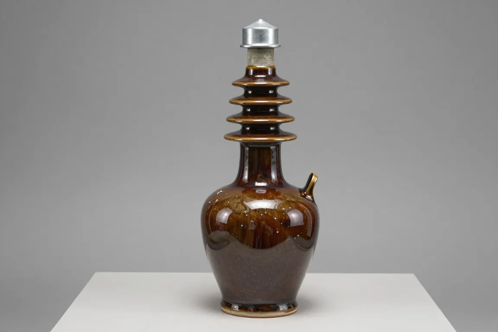

керамика · 1850 to now · также: Электротехнический фарфор, Керамический линейный изолятор, Телеграфный и силовой изолятор
Глазурованный фарфор, держащий провод под током вдали от опоры или башни. Форма следует электрическому полю и дождю: стопка юбок, коричневая или серая глазурь и цементный стык с металлическим колпаком.

Главная идея
Проводу нужна сухая твёрдая глазурованная поверхность между ним и землёй, поэтому черепок плотный, а форма — стопка дождевых юбок.
Принципы дизайна
Обжигайте плотный черепок с водопоглощением ниже 0,5 %, чтобы влага не проникала в стенку.
Глазуруйте каждую внешнюю поверхность слоем 0,3–0,5 мм, коричневой или светло-серой глазурью, чтобы стекали дождь и грязь.
Придавайте внешней стороне 2–4 нависающие юбки, чтобы внутренняя сторона оставалась сухой в дождь.
Увеличивайте путь утечки с напряжением: около 20–25 мм поверхности на каждый кВ линейного напряжения.
Оставляйте кольцо без глазури на цементном седле и обсыпайте его песком, чтобы цемент держался.
Делайте подвесной диск диаметром 146 мм с шагом 254 мм в гирлянде, чтобы части подходили друг к другу.
Штампуйте на плече мастера, год и нагрузку рельефными или врезанными буквами.
Антипаттерны
Тонкий белый горшок с золотой линией и цветочным принтом
Пористый черепок, показывающий голую шероховатую поверхность под глазурью
Один гладкий цилиндр без юбки, разрывающей водяную плёнку
Яркая цветная глазурь, скрывающая следы трекинга и грязь